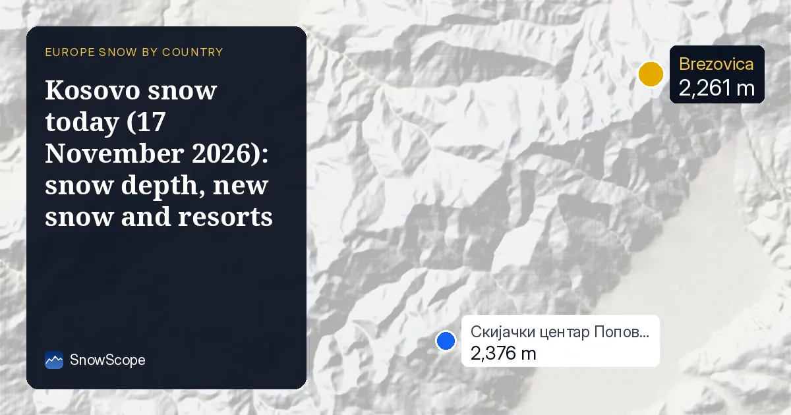

Kosovo snow today (17 November 2026): snow depth, new snow and resorts
In Kosovo, about 40 km² of high ground is white today, 80 km² lost since yesterday. That is 1 % of the high ground we map in Kosovo.
See the live snow forecast for Brezovica in the SnowScope appSnow depth, powder alerts and the 3D map, free.
Snow cover today
No height band is mostly white yet. That is close to the 60 km² of a week ago.
| Resort | Snow depth | New snow, 72 h | Coming, next days | Top |
|---|---|---|---|---|
| Brezovica | 0 cm | 6 cm | 1 cm | 2,261 m |

The latest snowfall
Three-day totals peak at 3 cm, around the Accursed Mountains and the Šar Mountains.
Skiing conditions
The snow is retreating uphill, so plan on the higher lifts and avoid the low valley runs.
With more snow in the forecast, the next days should improve things further.
Snow depth by height
Average depth of the snowpack by height band: 2,000-2,500 m: on average 1 cm (19 % of the ground white).
Where to ski first
The 1 resorts in Kosovo on our map are still green.
Snow on the way?
Snow is in the forecast: up to 1 cm by the end of the third day, up to 11 cm within seven days.
Saturday 21 November stands out, with up to 5 cm in a day.
Tips for skiers
- Morning snow is firm after a clear night: wait for the sun on south faces.
- Roads to the higher resorts may need winter tyres or chains.
- Snow above the tree line can be wind-packed: watch the ridges.
About these numbers
Resort snow depths are the deepest snow on the resort's upper slopes from the SnowScope snow model (about 1 km, run of 17 November); they are estimates for an area, not a measurement at one point. Station values are measurements on the date shown. Forecasts can change. Always read the official avalanche bulletin before going off-piste.
Cite this report
For research, teaching or the press: the numbers and charts are free to reuse under CC BY 4.0 with this citation.
SnowScope (2026), Kosovo snow today (17 November 2026): snow depth, new snow and resorts, https://snowscope.app/blog/en/2026/11/kosovo-snow-report-17-november-2026.html, accessed 2026-11-17
SnowScope (Atlas Labs). (2026, November 17). Kosovo snow today (17 November 2026): snow depth, new snow and resorts. SnowScope snow reports. https://snowscope.app/blog/en/2026/11/kosovo-snow-report-17-november-2026.html
BibTeX
@misc{snowscope2026kosovosnowreport17novemb,
author = {{SnowScope (Atlas Labs)}},
title = {Kosovo snow today (17 November 2026): snow depth, new snow and resorts},
year = {2026},
month = nov,
howpublished = {\url{https://snowscope.app/blog/en/2026/11/kosovo-snow-report-17-november-2026.html}},
note = {Published 2026-11-17 11:54 UTC; accessed 2026-11-17}
}· CC BY 4.0 · Methods, data and tools →
Brezovica: snow and temperature by height, this winter vs last (tools) →
Follow Brezovica
Free: a message when fresh snow is coming, and the forecast every morning.
More snow reports

Ten European ski resorts ranked for December value, led by Les 2 Alpes with 75 cm of mid-mountain snow.

Ski the 131 km of runs in the Forêt Blanche this December with a six-day pass for 298 EUR.

Valloire-Valmeinier offers 131 km of runs and a 98 % chance of 30 cm of snow at mid-mountain by mid-December.